same spot, just rotate the camera
For each set of photos, I found a spot, stayed there, and rotated my phone, making sure there was enough overlap to find the correspondence points. I scaled things down to cut the run time, since the phone stores photos at high resolution. I also took a couple of photos with obvious rectangles (not part of this deliverable, but I thought I would put them here).
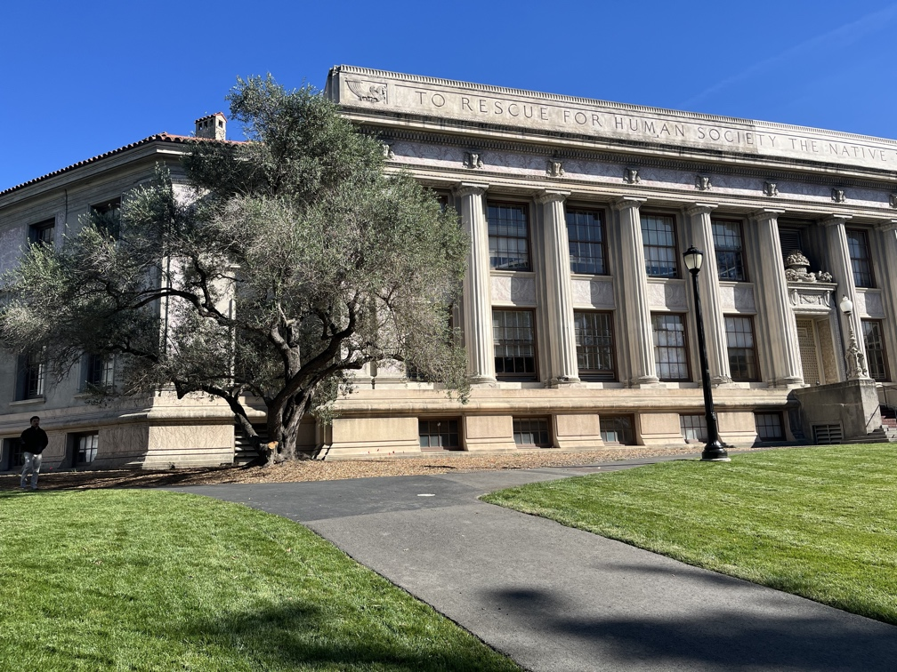
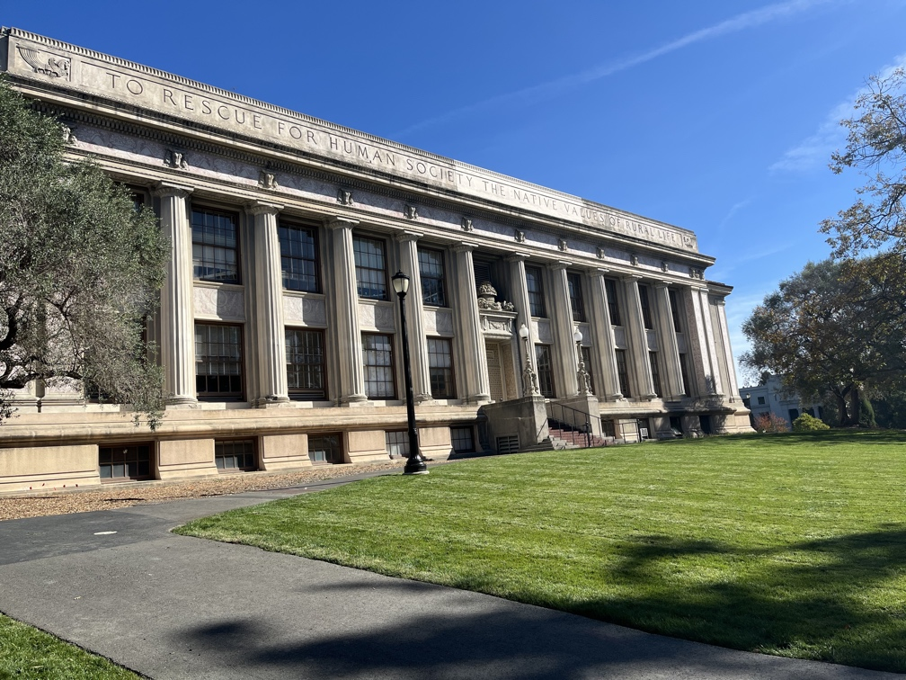
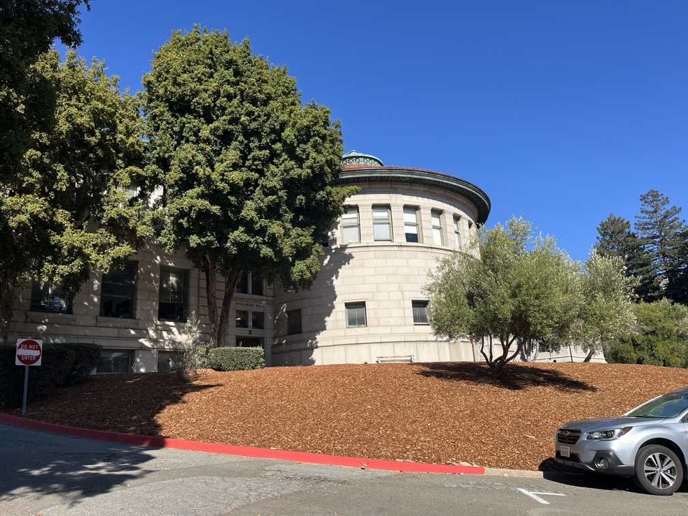
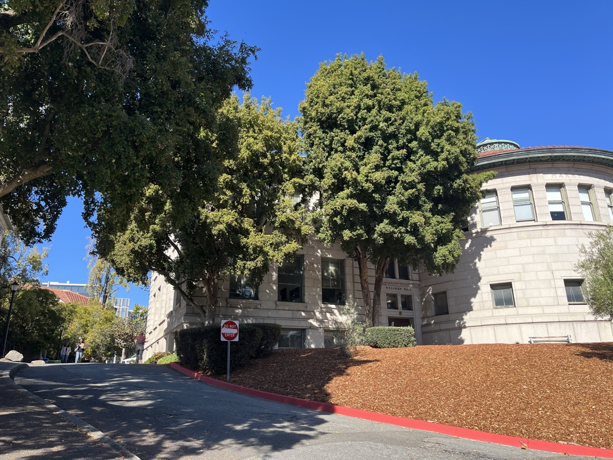
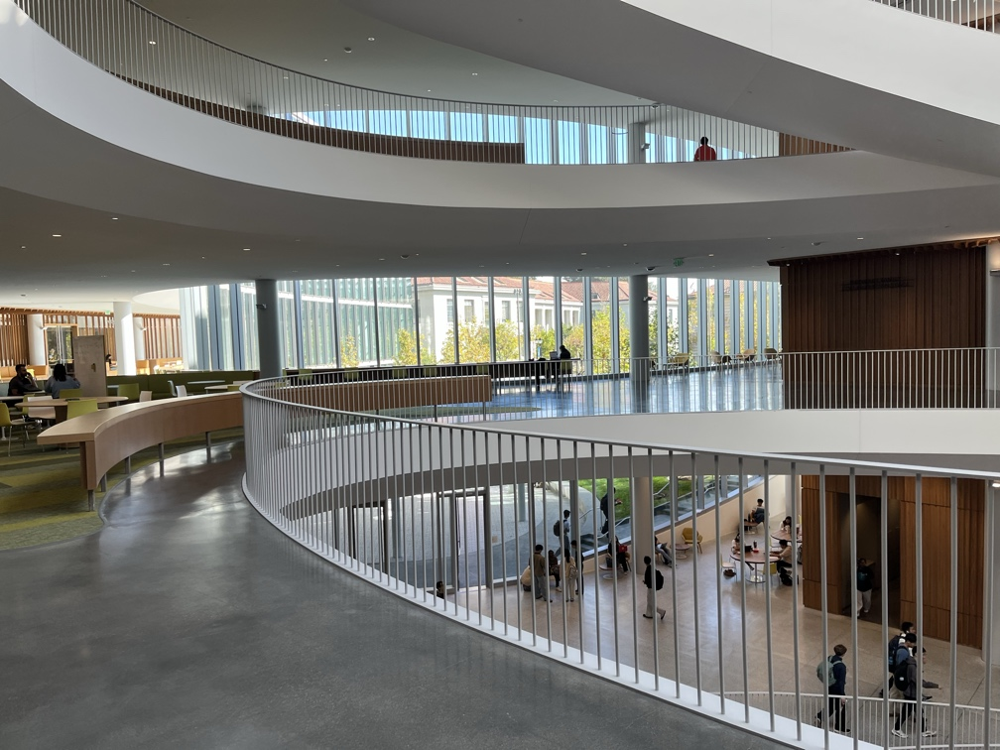
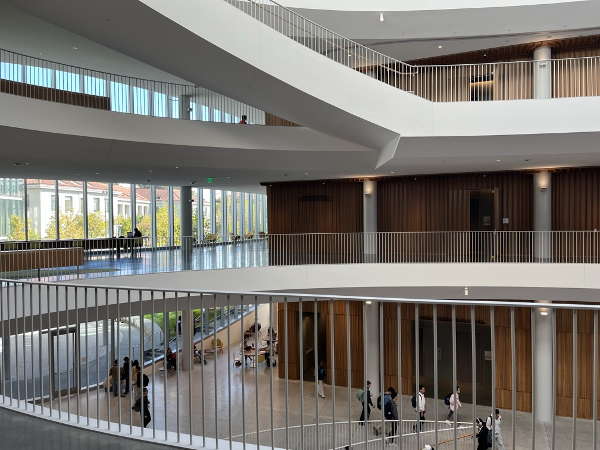
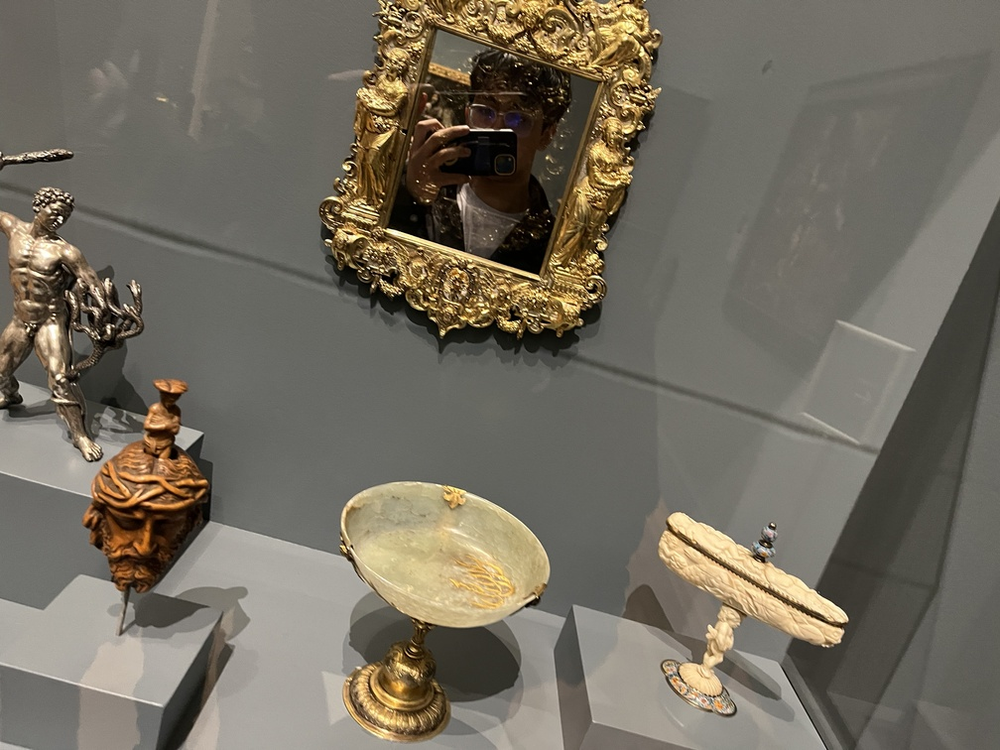
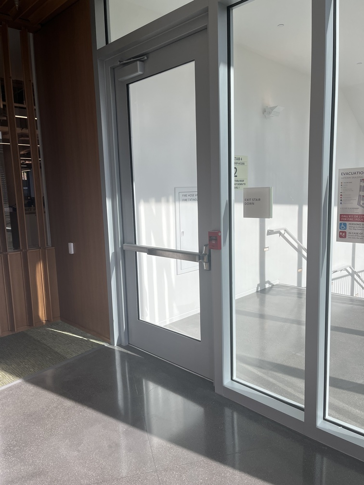
p′ = Hp, 8 unknowns
We know from lecture that the homography has 8 degrees of freedom (the last entry is fixed to be 1). Following the equation, we can isolate everything in terms of \(u\) and \(v\). Then we can set up a system of linear equations (choosing 9 to 10 correspondences to make sure it is overdetermined) and solve it with least squares to get the homographies.
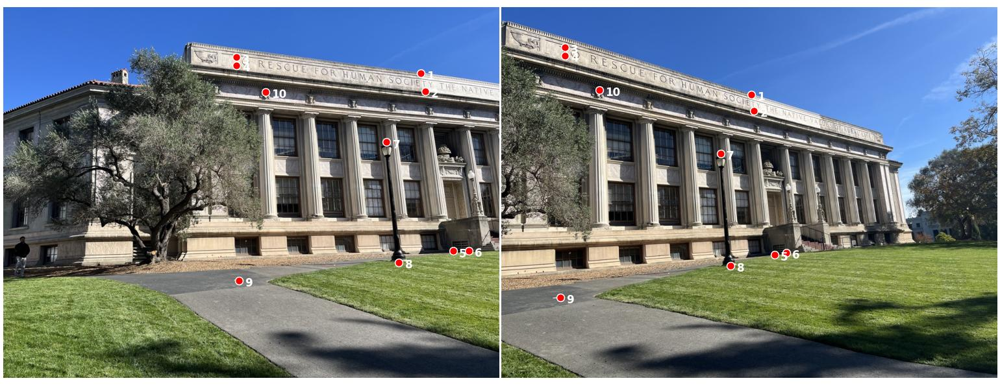
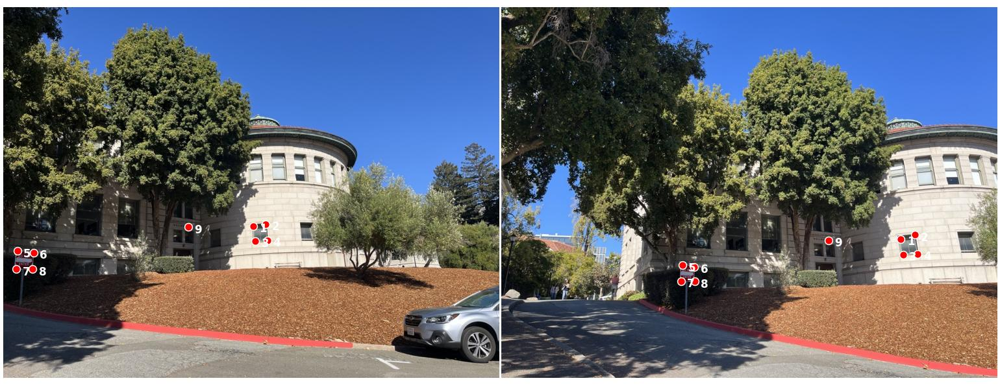
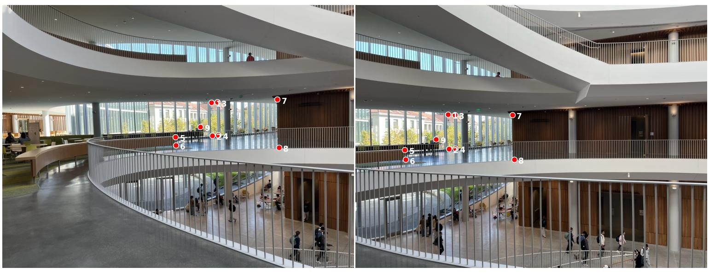
Each of the 10 correspondences gives two rows, so \(A\) is 20 × 8, solved with np.linalg.lstsq.
inverse warp, no holes
We use inverse warping to avoid holes. I first find the four corners and then make a bounding box around those corners. Then I go through every pixel, apply the inverse homography, and look at where it came from. There are two different ways to fill it in: nearest neighbor or bilinear interpolation (anything outside becomes black). For rectification, I clicked the four corners, made a guess of the target rectangle, and then warped it.
The four inner corners of the frame are sent to a 125 × 150 rectangle.
The four corners of the sign are sent to a 50 × 50 square.
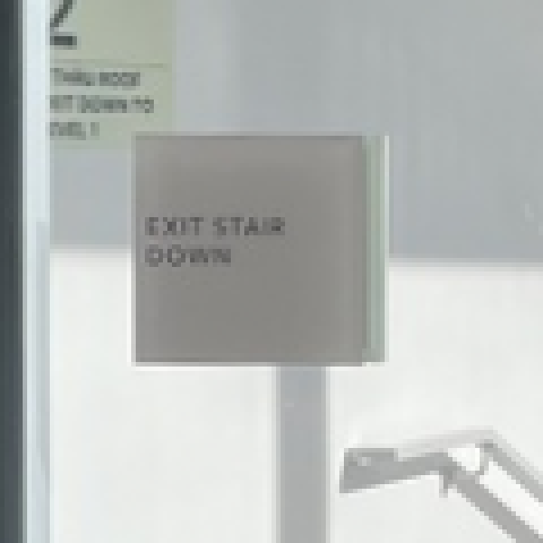
I noticed nearest neighbor, because it just takes the one closest pixel, tends to be more jagged, while bilinear interpolation looks at a couple of pixels and tries to create a smoother result. Speed-wise, bilinear was about 1.5 to 1.7× slower since it reads four pixels instead of one and does a bit more math per pixel. That is a small price for how much better it looks, so I would use bilinear unless speed really mattered, and that is what I used for the mosaics.
feather the seams
I use the second photo as the reference, then warp the first one with H using bilinear. The canvas is resized to fit both, using the warped corners. If you just paste one on top of the other, you get a hard seam. Instead, we do feather weighting: pixels close to the middle of an image get a lot of weight, and it fades to 0 toward the outside (each pixel's weight is its distance to the edge of its own image, divided by the total from both images, so in the overlap the warped image slowly hands off to the reference as you move toward its border). I also do a 2-level Laplacian blend (Gaussian with σ = 4): the high frequencies stay from whichever image is more inside at that pixel, while we blend the lower frequencies with the weights.
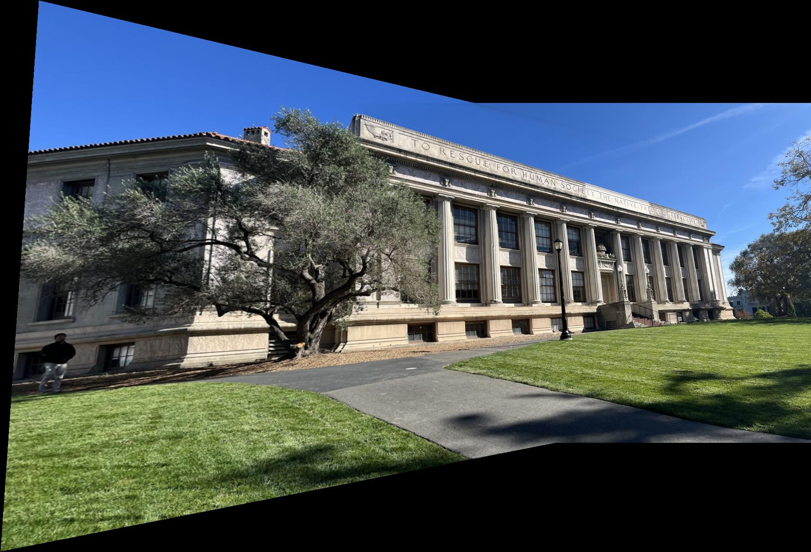
This one came out clean. The columns and the roofline stay straight across the overlap, and the tree, which I was worried about since leaves are hard to line up, does not really ghost. The black wedges at the top and bottom are just where the warped photo tilts out, which is normal for a planar mosaic.
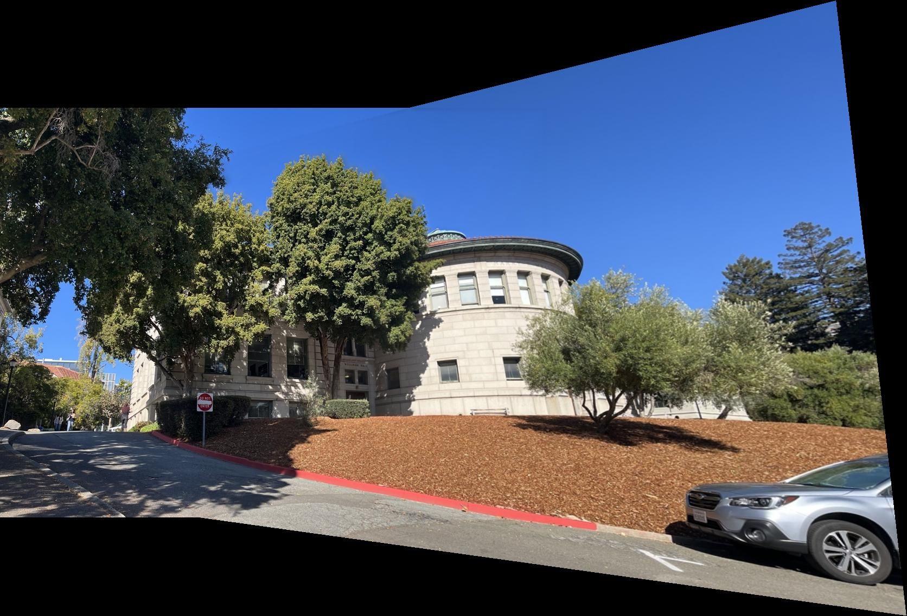
Also pretty clean. The red curb and the rotunda line up nicely across the two photos, and the blend hides the seam through the trees. Most of my points were on the building and the curb, and that is where it lines up best.
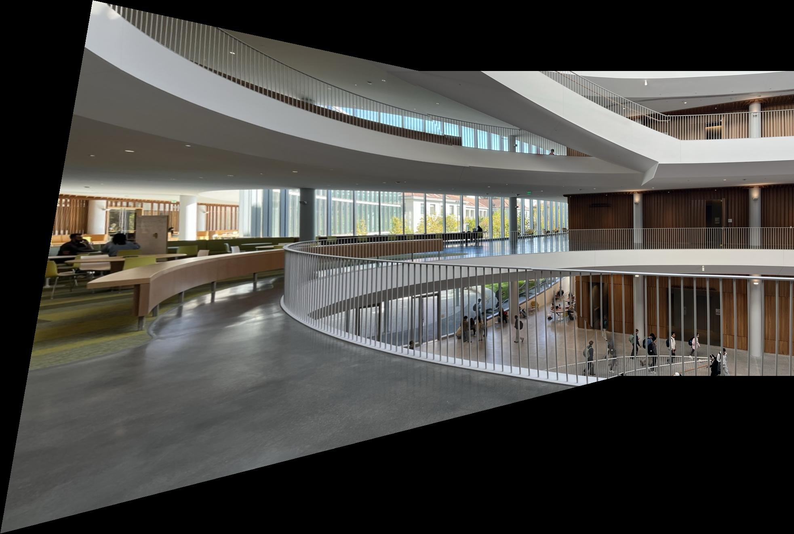
The curved railing actually lines up across both photos, which I was a little nervous about since curves make any misalignment really obvious. The people walking around on the floor below moved between shots, so there is a bit of a blur on them due to the motion.